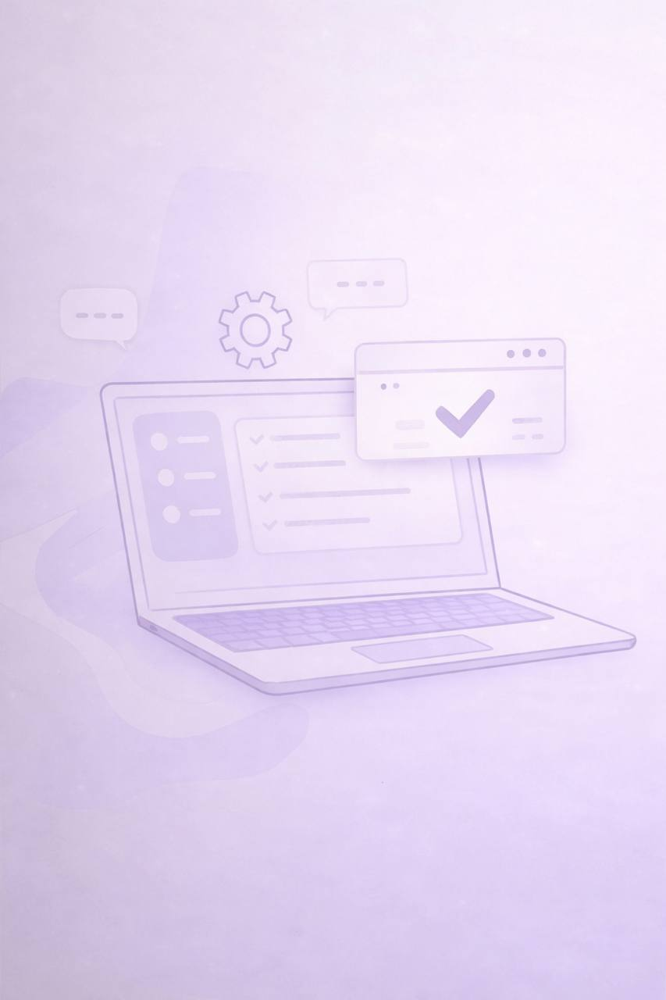

الموقع الشخصي
أنا عاليه، خريجة علوم وهندسة الحاسب الآلي، وأبني تجربة جودة برمجية أكثر وضوحًا وموثوقية.
أهتم باختبار البرمجيات، فحص واجهات API، وأتمتة السيناريوهات المهمة بطريقة تساعد الفرق على إطلاق منتجات مستقرة ومفهومة وسهلة التحسين.

من أنا
نبذة تعكس شخصيتي المهنية
أسعى إلى بناء مسار مهني في مجال اختبار البرمجيات وجودتها، وأحب العمل المنظم الذي يجمع بين التحليل، الدقة، وفهم تجربة المستخدم. بالنسبة لي، الجودة ليست خطوة أخيرة فقط، بل جزء أساسي من بناء منتج ناجح.
Quick Facts
التخصص
علوم وهندسة الحاسب الآلي
الاهتمام
Software Testing & QA
الأدوات
Postman, Cypress, GitHub
نقاط القوة
كيف أضيف قيمة في المشاريع التقنية
اختبار يدوي منظم
أتعامل مع السيناريوهات الأساسية والحالات الحدية بدقة مع توثيق واضح للملاحظات والمشكلات.
فهم عملي لواجهات API
أراجع الطلبات والاستجابات ورموز الحالة للتأكد من استقرار السلوك وصحة التكامل بين الأنظمة.
أتمتة تقلل التكرار
أبني سيناريوهات Cypress تساعد على تسريع الاختبارات المتكررة ورفع الثقة قبل الإطلاق.
Manual Testing
API Testing
Postman
Cypress
JavaScript
Git & GitHub
Bug Reporting
Usability Thinking
Projects
نماذج من الأعمال المنشورة
OWASP Juice Shop Security Testing
تطبيق عملي على اختبار أمني مع توثيق للملاحظات والثغرات ونتائج الفحص.
فتح المشروعCypress Swag Labs Framework
إطار أتمتة متكامل يعتمد على POM مع تقارير Allure وتشغيل CI/CD لسيناريوهات الويب.
فتح المشروعAPI Testing with Postman
مجموعات طلبات واختبارات تحقق للمسارات الأساسية والحالات الخاصة في واجهات API.
فتح المشروعتواصل
أرحب بفرص التدريب، التوظيف، والتعاون التقني
إذا كان لديك فرصة في مجال الجودة أو اختبار البرمجيات، يسعدني التواصل ومشاركة المزيد عن خبرتي ومشاريعي.